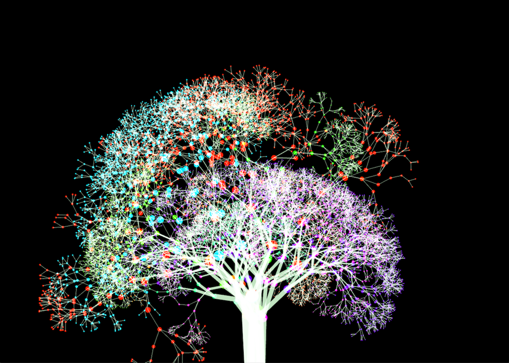
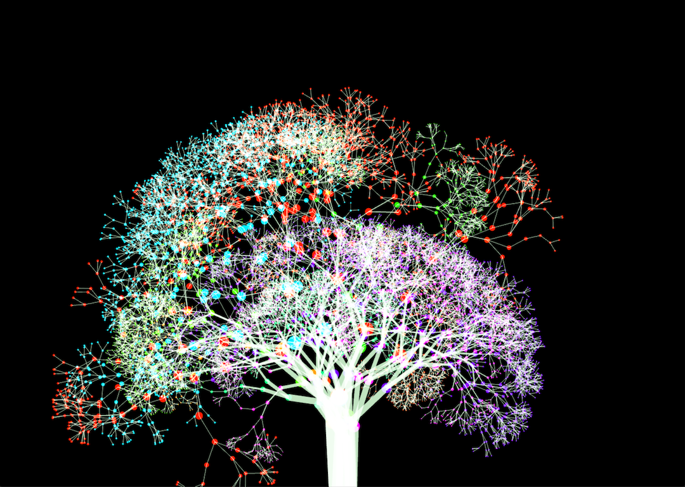

Night Forest
Night Forest is an interactive immersion environment, whose goal is building a forest environment with fluorescent effect. I was inspired by the TeamLab projects, which have dreamlike environments. This project is also one part of my research project which is about the human relations. About the topic of interactive immersion environment, researchers always talk about the relations between human and visual, human and auditory, and human and space. I, however, want to explore the role of technology and how to adjust the relationships between humans and humans. David Rokeby explained，"Rather than creating finished works, the interactive artist creates relationships". There are a lot of relationships in a common space. Technology as a mediator, it builds the connections among human. In my project, I also want to talk about the relations between human and nature, which is human always influence nature environment, but they are also influenced by nature environment. Furthermore, people are also one part of the environment. In daily life, people are hard to realize they are affecting nature environment. What I want to highlight is the unconscious state of people, a kind of passive state. The passive state also exists among audiences. To be specific, the connections were built by digital tools. In contrast with Future Park, by TeamLab, this state is more prominent.
This project is mainly composed of two parts. One is the trees which are influenced by people. Another one is the particle systems which are drew based on the human boundary. What's more, I use Kinect to adjust the range of detection area and use ofxCv to calculate the total number of audiences and detect the human boundaries.
 

Technical Implementation
When the total number of people increase, new class of tree will be generated and pushed back in the vector, and then the new tree will grow. I also map the total number of trees to the total number of people to set the limitation, which can make sure computer does not crash because of the huge number of branches. As for the color system, I choose ADD mode which can make the effect of fluorescent.
When the Kinect find the founder path, the for loop function will loop all the points which compose of polylines, and then I use calculation(g+=50) to skip some points to make sure that the total number of particles will not be too much.